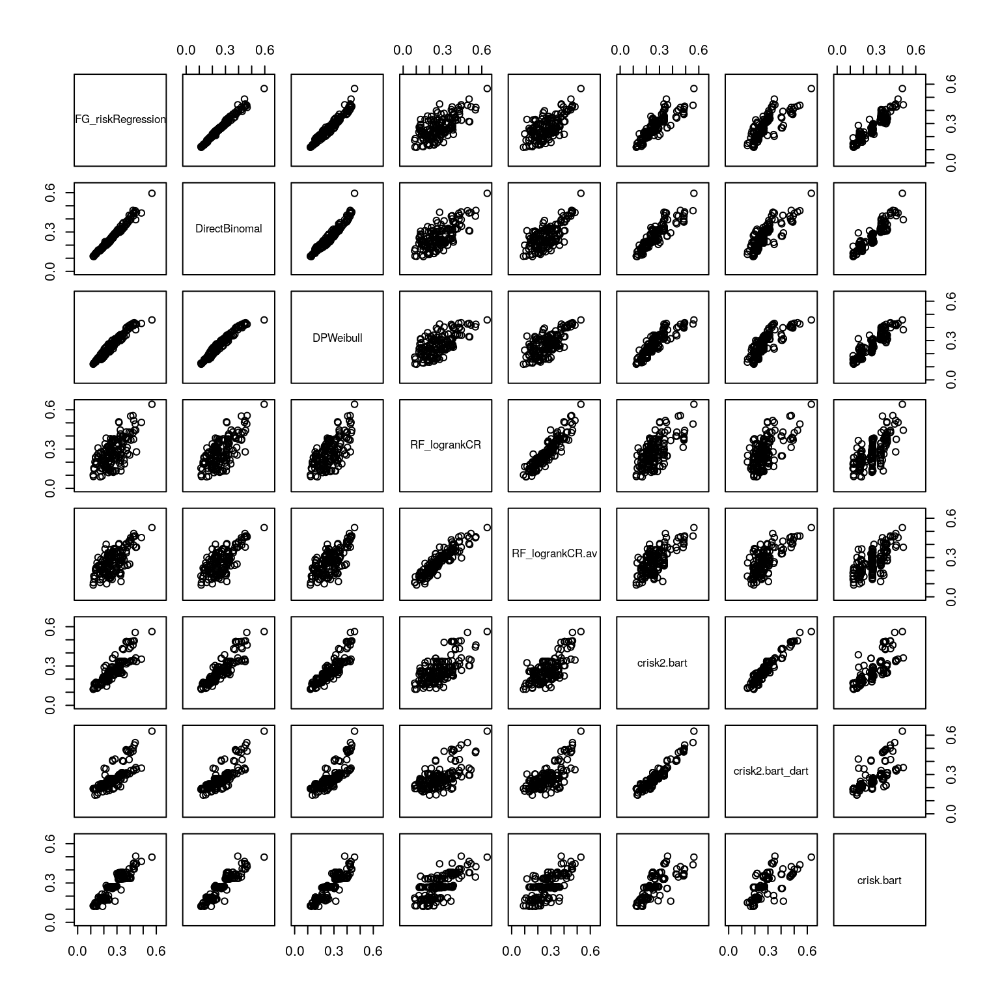

Here, we load the predicted probabilities of observing an event of type 1 by \(t=5\) that were obtained by different methods
if (file.exists("/.dockerenv")){
pred_CIF <- read.csv("/Predictions/pred_CIF.csv")
pred_Others <- read.csv("/Predictions/pred_Others.csv")
pred_BART <- read.csv("/Predictions/pred_BART.csv")
} else {
pred_CIF <- read.csv("../Predictions/pred_CIF.csv")
pred_Others <- read.csv("../Predictions/pred_Others.csv")
pred_BART <- read.csv("../Predictions/pred_BART.csv")
}
pred_All <- merge(pred_CIF, pred_Others, by = "testID")
pred_All <- merge(pred_All, pred_BART, by = "testID")As shown below, all methods led to correlated predictions. As expected we observe greater similarity between methods based on the CIF specification (Fine and Gray regression, direct binomial and DPWeibul). The three BART variations also led to similar predictions (discrepancies may be due to lack of convergence).
plot(pred_All[,-1], xlim = c(0, 0.65), ylim = c(0, 0.65))
To evaluate the predictive performance for each methods, users can follow the examples provided by van Geloven et al.
sessionInfo()
#> R version 4.2.2 (2022-10-31)
#> Platform: x86_64-pc-linux-gnu (64-bit)
#> Running under: Ubuntu 22.04.1 LTS
#>
#> Matrix products: default
#> BLAS: /usr/lib/x86_64-linux-gnu/openblas-pthread/libblas.so.3
#> LAPACK: /usr/lib/x86_64-linux-gnu/openblas-pthread/libopenblasp-r0.3.20.so
#>
#> locale:
#> [1] LC_CTYPE=en_US.UTF-8 LC_NUMERIC=C
#> [3] LC_TIME=en_US.UTF-8 LC_COLLATE=en_US.UTF-8
#> [5] LC_MONETARY=en_US.UTF-8 LC_MESSAGES=en_US.UTF-8
#> [7] LC_PAPER=en_US.UTF-8 LC_NAME=C
#> [9] LC_ADDRESS=C LC_TELEPHONE=C
#> [11] LC_MEASUREMENT=en_US.UTF-8 LC_IDENTIFICATION=C
#>
#> attached base packages:
#> [1] parallel stats graphics grDevices utils datasets methods
#> [8] base
#>
#> other attached packages:
#> [1] randomForestSRC_3.1.1 BART_2.9
#> [3] nlme_3.1-160 nnet_7.3-18
#> [5] mboost_2.9-7 stabs_0.6-4
#> [7] glmnet_4.1-6 Matrix_1.5-1
#> [9] pec_2022.05.04 rms_6.3-0
#> [11] SparseM_1.81 Hmisc_4.7-2
#> [13] ggplot2_3.4.0 Formula_1.2-4
#> [15] lattice_0.20-45 coda_0.19-4
#> [17] DPWeibull_1.8 timereg_2.0.4
#> [19] pseudo_1.4.3 geepack_1.3.9
#> [21] KMsurv_0.1-5 riskRegression_2022.11.28
#> [23] prodlim_2019.11.13 cmprsk_2.2-11
#> [25] survival_3.4-0 splitstackshape_1.4.8
#> [27] pander_0.6.5 readr_2.1.3
#>
#> loaded via a namespace (and not attached):
#> [1] TH.data_1.1-1 colorspace_2.0-3 deldir_1.0-6
#> [4] ellipsis_0.3.2 evd_2.3-6.1 htmlTable_2.4.1
#> [7] base64enc_0.1-3 rstudioapi_0.14 listenv_0.8.0
#> [10] MatrixModels_0.5-1 bit64_4.0.5 fansi_1.0.3
#> [13] mvtnorm_1.1-3 codetools_0.2-18 splines_4.2.2
#> [16] cachem_1.0.6 libcoin_1.0-9 knitr_1.41
#> [19] jsonlite_1.8.3 broom_1.0.1 cluster_2.1.4
#> [22] png_0.1-8 data.tree_1.0.0 DiagrammeR_1.0.9
#> [25] compiler_4.2.2 backports_1.4.1 assertthat_0.2.1
#> [28] fastmap_1.1.0 cli_3.4.1 visNetwork_2.1.2
#> [31] htmltools_0.5.3 quantreg_5.94 tools_4.2.2
#> [34] partykit_1.2-16 gtable_0.3.1 glue_1.6.2
#> [37] dplyr_1.0.10 Rcpp_1.0.9 jquerylib_0.1.4
#> [40] vctrs_0.5.1 iterators_1.0.14 inum_1.0-4
#> [43] xfun_0.35 stringr_1.5.0 globals_0.16.2
#> [46] lifecycle_1.0.3 future_1.29.0 polspline_1.1.22
#> [49] MASS_7.3-58.1 zoo_1.8-11 scales_1.2.1
#> [52] vroom_1.6.0 hms_1.1.2 sandwich_3.0-2
#> [55] RColorBrewer_1.1-3 yaml_2.3.6 gridExtra_2.3
#> [58] sass_0.4.4 truncdist_1.0-2 rpart_4.1.19
#> [61] latticeExtra_0.6-30 stringi_1.7.8 highr_0.9
#> [64] foreach_1.5.2 checkmate_2.1.0 shape_1.4.6
#> [67] lava_1.7.0 mets_1.3.1 rlang_1.0.6
#> [70] pkgconfig_2.0.3 evaluate_0.18 purrr_0.3.5
#> [73] htmlwidgets_1.5.4 bit_4.0.5 tidyselect_1.2.0
#> [76] parallelly_1.32.1 magrittr_2.0.3 R6_2.5.1
#> [79] nnls_1.4 generics_0.1.3 multcomp_1.4-20
#> [82] DBI_1.1.3 pillar_1.8.1 foreign_0.8-83
#> [85] withr_2.5.0 tibble_3.1.8 future.apply_1.10.0
#> [88] crayon_1.5.2 interp_1.1-3 utf8_1.2.2
#> [91] tzdb_0.3.0 rmarkdown_2.18 jpeg_0.1-10
#> [94] grid_4.2.2 data.table_1.14.6 binaryLogic_0.3.9
#> [97] digest_0.6.30 tidyr_1.2.1 numDeriv_2016.8-1.1
#> [100] stats4_4.2.2 munsell_0.5.0 bslib_0.4.1
#> [103] quadprog_1.5-8